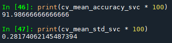

Bengaluru Complaints Supervised Classification Model
By Nathan States
August 22, 2022
- Posted on:
- August 22, 2022
- Length:
- 21 minute read, 4441 words
- See Also:
Results #
- Over 80% of complaints filed were related to street lights not working, road maintenance, or garbage collection issues.
- Of the four classification models, the linear support vector classifier performed the best, recording 88.773% accuracy. The top three models all performed similarly as well, though, with all falling within roughly three percentage points.
- Improvements were made by increasing the number of stop words, as well as combining smaller categories into larger ones. Using the LinearSVC, these changes led to a 3.214% increase, ultimately recording an accuracy of 91.987%.
- Further improvements could be had by adding to the stop word list, changing the contents of the “Others” category, and adjusting the downsampling of the model.
Table of Contents
Background #
Text data can be one of the more difficult data types to use in analytics, but raw text is invaluable in many different ways. Using simple Python libraries, modern machine learning models can parse thousands of rows in seconds, which can be used for various functions. One of the most common tasks is classification.
The Bruhat Bengaluru Mahangara Palike (BBMP) - an administrative body that oversees city development in Bengaluru, a large tech city in India - created a web application that allows citizens to file grievances with the city. From February 8th, 2020 to February 21st, 2021, a total of 105,956 complaints were filed with the city, translating to roughly 280 grievances a day. Exploring this data not only provides insight into the most common problems facing the city of Bengaluru (or at least the complaints most likely to be filed), but also presents an opportunity to quantify and categorize them.
In the dataset, complaints have been manually categorized by the administrators who oversee the app at BBMP, but this is extremely inefficient. Usefully, though, the developers have already created categories that they felt best sorted the data, which means (assuming complaints don’t change substantially in the future) we can train a machine learning model that performs this task automatically. Because the categories are already defined, this will be a supervised classification model.
Data Wrangling #
Data wrangling and the EDA will be done using R.
First, we import in the data and the necessary libraries.
# Load Libraries
library(tidyverse)
library(tidymodels)
library(tidytext)
library(echarts4r)
library(here)
library(lubridate)
library(wordcloud2)
library(reticulate)
# Set Directory
here::set_here()
# Import Data
grievances <- readr::read_csv("bengaluru-grievances.csv")
The admins at BBMP keep their data neat and tidy, so there’s not many problems to fix. There are a couple things to consider, however.
The first issue is that some descriptions are extremely short, making classifying them accurately near impossible. We can limit the number of characters that a complaint must have, though the appropriate number of rows to remove is debatable. Ideally, we don’t want to exclude too much of the data while still removing descriptions too short to be properly categorized.
Using str_length from the stringr package, we see 5,392 complaints contained fewer than 12 characters, meaning removing them would still preserve 95% of the original data. Using filter from dplyr, we can keep all complaints containing more than 12 characters.
# Counting number of rows
grievances %>%
filter(str_length(description) < 12) %>%
count()
## # A tibble: 1 x 1
## n
## <int>
## 1 5392
# Removing those rows
grievances <- grievances %>%
filter(str_length(description) > 12)
The other consideration is whether the existing categories accurately reflect the data or not. It’s possible certain similarities between different categories would better be combined into one, and likewise, single categories that should be multiple ones. These changes might not only provide a better description of the data, but improve accuracy in the long run.
For now, we will leave the original categories intact and proceed, but future models may benefit from this step.
Exploratory Data Analysis #
Interactive charts were created using echarts4r.
Number of Grievances By Day #
# Set Theme
e_common(
theme = "echarts-theme-states.json",
font_family = "Georgia"
)
# Chart
grievances %>%
group_by(created_at = as.Date(created_at)) %>%
summarise(Total = n()) %>%
e_charts(created_at) %>%
e_line(Total, symbol = "none") %>%
e_x_axis(axisLabel = list(interval = 0)) %>%
e_title(
text = "Total number of grievances by day",
subtext = "Data: BBMP | nathanstates.com"
) %>%
e_color(
"#b54914",
background = "rgb(0,0,0,0)"
) %>%
e_legend(show = FALSE) %>%
e_tooltip(
backgroundColor = "rgba(20, 20, 20, 0.5)",
borderColor = "rgba(0, 0, 0, 0)",
textStyle = list(
color = "#ffffff"
),
trigger = "axis"
)
On most days, grievances would vary between 200 to 400 a day, with some spikes in September onwards, including a massive single-day one in March of 742. On average, 280 complaints were filed each day.
Grievances by Category #
grievances %>%
group_by(category) %>%
summarise(Total = n()) %>%
arrange(desc(Total)) %>%
filter(Total > 1000) %>%
slice(1:10) %>%
e_charts(category) %>%
e_bar(Total) %>%
e_x_axis(
axisLabel = list(
interval = 0,
rotate = 45,
fontSize = 9.25
)
) %>%
e_title(
text = "Most common grievances by category",
subtext = "Only categories above 1,000 visible"
) %>%
e_legend(show = FALSE) %>%
e_labels(show = FALSE) %>%
e_color(
"#2a724a",
background = "rgb(0,0,0,0)"
) %>%
e_tooltip(
trigger = "axis",
backgroundColor = "rgba(20, 20, 20, 0.5)",
borderColor = "rgba(0, 0, 0, 0)",
textStyle = list(
color = "#ffffff"
)
)
81.89% of total grievances were categorized as “Electrical,” “Solid Waste (Garbage) Related,” or “Road Maintenance (Engg).” The next three largest categories make up an additional 11.09%, meaning the remaining categories have less than 1,350 occurrences combined.
Note that this is not due to a lack of categories; in fact, there are a total of 20 categories in the data.
length(unique(grievances$category))
## [1] 20
Large imbalances like this are important to consider when building machine learning models in general. Algorithms are specifically programmed to achieve the highest accuracy regardless of original purposes, and they tend to overestimate the presence of larger categories. If a model discovers it can restrict itself to three options while still recording 80%+ accuracy, it will almost always do so.
This means, though, machine learning models will tend to ignore minor categories, because - using our current data as an example - predicting a category outside the top three has an inherent 81.89% fail rate, so this will need to be addressed when creating models.
There is question to whether certain smaller categories should exist at all, though.
grievances %>%
group_by(category) %>%
summarise(total = n()) %>%
filter(total < 100)
## # A tibble: 5 x 2
## category total
## <chr> <int>
## 1 Education 20
## 2 Estate 75
## 3 Markets 38
## 4 Optical Fiber Cables (OFC) 62
## 5 Welfare Schemes 28
Five categories have less than 100 complaints total, including two which have less than thirty. This is far too few complaints to reliably build a model with.
Grievances by Subcategory #
grievances %>%
group_by(subcategory) %>%
summarise(Total = n()) %>%
arrange(Total) %>%
filter(Total > 1000) %>%
e_charts(subcategory) %>%
e_bar(Total) %>%
e_legend(show = FALSE) %>%
e_title(
text = "Most common grievances by subcategory",
subtext = "Only categories above 1,000 visible"
) %>%
e_color("#2a724a", background = "rgb(0,0,0,0)") %>%
e_flip_coords() %>%
e_tooltip(
trigger = "axis",
backgroundColor = "rgba(20, 20, 20, 0.5)",
borderColor = "rgba(0, 0, 0, 0)",
textStyle = list(
color = "#ffffff"
)
)
While the model being built is only to predict main categories, by viewing subcategories, we see over 35% of total complaints were related specifically to street lights not working, comprising almost all of the “Electrical” category.
“Solid Waste (Garbage) Related” has been divided into two subcategories; “Garbage vehicle not arrived” and “Garbage dump,” while Road Maintenance is divided into three subcategories, those being “potholes”, “road side drains”, and “debris removal”.
Most Common Complaint Words #
tidy <- grievances %>%
unnest_tokens(word, description) %>%
anti_join(get_stopwords()) %>%
count(word) %>%
arrange(desc(n)) %>%
slice(1:50)
## Joining, by = "word"
wordcloud2(
tidy,
color = rep_len(c("#8c5ac8", "#0b0d21", "#0a32d2"), nrow(tidy)),
backgroundColor = "#fcfcfc"
)
Seeing as over 35% of the data was subcategorized as “Street Lights Not Working,” we see that they are the most common words across all the complaitns.
Missing from that is the word “not,” but this is because we removed all stop words from the data. Put simply, stop words are words that don’t add anything to the process of categorizing text. They usually include words such as “he,” “she,” “there,” “they,” “I,” and so on, which is why they don’t appear in the word cloud.
The stop words included in the tidytext package (and the ones used in the function above) are meant to apply universally, but if you look closely at the word cloud, there are several words that almost certainly would not factor when classifying complaints. These include terms like “please,” “kindly”, “last request,” “sir,” and individual numbers like “1,” “2,” and “3.” While there might exist some incidental correlations between some of these words and their respective categories (perhaps citizens filing animal control complaints are nicer on average, so the term “please” could be used to identify those complaints more accurately, for example), it’s likely this will just throw off our model’s accuracy in the long run.
From the EDA, the primary factors that should be considered when building the models are:
- Account for imbalances in number of occurrences per category.
- Reduce the number of categories by combining them into existing ones.
- Add additional stop words to the existing list.
MLE Models #
Preparing the Data #
We’ll opt to use Python for creating the MLE models, as Python libraries are generally more efficient and developed than their R counterparts. Because creating models is computer intensive, the code here has been evaluated locally and presented here for demonstration.
To start, we’ll load import the necessary libraries and load the data using pandas. The models will be built using the sklearn package.
import numpy as np
import pandas as pd
import matplotlib.pyplot as plt
import seaborn as sns
from sklearn.feature_extraction.text import TfidfVectorizer
from sklearn.feature_selection import chi2
from sklearn.model_selection import train_test_split
from sklearn.naive_bayes import MultinomialNB
from sklearn.linear_model import LogisticRegression
from sklearn.ensemble import RandomForestClassifier
from sklearn.svm import LinearSVC
from sklearn.model_selection import cross_val_score
from sklearn import metrics
df = pd.read_csv("bengaluru-grievances.csv")
One of the packages imported here is TfidfVectorizer, which will be the algorithm used to create the models. I’ll explain why I specifically chose this package later on.
Here, I quickly apply the earlier data wrangling techniques by removing complaints less than 12 characters, this time using Python syntax.
# Reduce Character Limit
character_limit = (df["description"].str.len() > 12)
df = df.loc[character_limit]
A model based on over 100,000 observations is extremely hardware intensive, and it causes my laptop to overheat a lot. For practical purposes, we’ll cut down on our data by choosing 15,000 rows at random.
df = df.sample(15000, random_state = 1).copy()
If we wanted to get another random 15,000 rows, we could change the random_state = 1 argument to any other number, like 42, 671, or 7.
With no other additional changes to be made, we can begin creating the models.
Text Preprocessing #
There are several methods to building models, but the simplest method is to create a new column in our data - we’ll call it “category_id” - that is a factor variable of all existing categories in our data. This essentially amounts to assigning each category a number (Electrical = 0, Road Engineering = 1, etc), which is necessary for getting our model to run properly, as sklearn will not understand strings as factors.
df['category_id'] = df["category"].factorize()[0]
category_id_df = df[["category", "category_id"]].drop_duplicates()
Next, the description column (which stores the text for grievances) needs to be converted to vectors using a chosen algorithm. The algorithm chosen here is Term Frequency - Inverse Document Frequency (TF-IDF), which is the product of \(TF\) and \(IDF\) scores. This is the TfidfVectorizer function that we imported earlier.
It’s useful to present these terms mathematically.
Term Frequency: $$ TF = \frac{Number \hspace{0.15cm} of \hspace{0.15cm} times \hspace{0.15cm} a \hspace{0.15cm} term \hspace{0.15cm} appears \hspace{0.15cm} in \hspace{0.15cm} the \hspace{0.15cm} description}{Total \hspace{0.15cm} number \hspace{0.15cm} of \hspace{0.15cm} words \hspace{0.15cm} in \hspace{0.15cm} the \hspace{0.15cm} description} $$
Inverse Document Frequency: $$ IDF = log(\frac{Number \hspace{0.15cm} of \hspace{0.15cm} rows \hspace{0.15cm} in \hspace{0.15cm} a \hspace{0.15cm} data}{Number \hspace{0.15cm} of \hspace{0.15cm} rows \hspace{0.15cm} a \hspace{0.15cm} term \hspace{0.15cm} appears \hspace{0.15cm} in \hspace{0.15cm} a \hspace{0.15cm} data}) $$
TF-IDF: $$ TF-IDF = TF * IDF $$
The reason for choosing this algorithm was for the \(IDF\) component, which downsamples words that appear frequently across all complaints, while adding extra weight to terms that appear less often.
Analyzing it mathematically: as the denominator of the \(IDF\) variable increases, the closer it rapidly (more precisely, exponentially) approaches zero. Let \(N\) represent the total number of rows in the data, and let \(t\) represent a chosen term. If a certain word were to appear in every single complaint, then we would have \(IDF(N, t) = log(\frac{N}{t}) = log(\frac{N}{N}) = log(1) = 0\), which would mean that when calculating \(TF-IDF\), that specific word would have absolutely no weight attached to it when classifying complaints.
Now; why do this? As discussed previously during the EDA section, almost 82% of all grievances fall into exactly three categories. Classification models will tend to stick to only a few categories, struggling to identify minor categories. While this may record higher accuracy scores on average, doing so means minor categories will rarely be classified at all, and in some instances, could lower overall accuracy if skew is significant enough. By ranking terms on an exponentially decreasing scale, we hope to reduce this issue.
We first setup our TfidfVectorizer and assign it to a variable, tfidf.
tfidf = TfidfVectorizer(
sublinear_tf = True, # Set term frequency to logarithmic scale
min_df = 5, # Remove terms that appear less than 'min_df' times
ngram_range = (1, 2), # Unigrams and bigrams are considered
stop_words = 'english' # Use common English stop words
)
From here, we can begin building our models, but before doing so, let’s see what the most common terms were for each category.
To do so, we use tfidf.get_feature_names_out() on each category and assign that to a variable that we’ll call “feature_names.” This contains all of the most common words associated with each category, which we then split into two separate lists for unigrams and bigrams (fancy words for “one word” and “two words”). From there, we print to console the \(N = 3\) most common terms from each list. We wrap all this in a for loop, automatically progressing through each category.
# Defaults
features = tfidf.fit_transform(df.description).toarray()
labels = df.category_id
N = 3
# For Loop
for category, category_id in sorted(category_to_id.items()):
features_chi2 = chi2(features, labels == category_id)
indices = np.argsort(features_chi2[0])
feature_names = np.array(tfidf.get_feature_names_out())[indices]
unigrams = [v for v in feature_names if len(v.split(' ')) == 1]
bigrams = [v for v in feature_names if len(v.split(' ')) == 2]
print("\n==> %s:" %(Product))
print(" * Most Correlated Unigrams are: %s" %(', '.join(unigrams[-N:])))
print(" * Most Correlated Bigrams are: %s" %(', '.join(bigrams[-N:])))
As this part was performed offline, here is the output in screenshots.


The results are largely what we would expect / hope for, though there are some things to note.
Some common phrases that appear for certain categories seemingly have nothing to do with them, such as the terms “77”, “kindly”, and “plz look”, which is one of the most common bigrams for both “Education” and “Welfare Schemes.” Remember, these were the categories that had less than 100 observations total. When we split the data to grab 15,000 random rows, these categories were split further, reducing those categories even further, which is why these nonsense phrases appear.
Building the Models #
To begin, we first split the data into a 75:25 training and test split. The model will “learn” how to classify grievances based on the training data, and then it will “test” its accuracy on the remaining 25% (or about 3,750 rows).
# We define them here as independent variables
X = df["description"]
y = df["category"]
X_train, X_test, y_train, y_test = train_test_split(X, y, test_size = 0.25, random_state = 0)
There are several different models to choose from, but it’s difficult to determine which will perform best before actually building them. Therefore, we’ll test several out simultaneously by storing them in a list and looping through each model.
models = [
RandomForestClassifier(n_estimators = 100, max_depth = 5, random_state = 0),
LinearSVC(),
MultinomialNB(),
LogisticRegression(random_state = 0)
]
Here, we stored in a list the following:
- Random Forest Model
- Linear Support Vector Classifier Model
- Multinomial Naive Bayes Model
- Logistic Regression Model
After, we apply each model to the training data and record the results. The accuracy of each model is inherently random, as model performance is somewhat due to chance, so we’ll use a five-fold cross-validation and take the mean average of each iteration to get a more balanced result. We store the results in a pandas dataframe for analysis.
# Copy and pasted from before
features = tfidf.fit_transform(df.description).toarray()
labels = df.category_id
CV = 5 # Number of cross-validations
cv_df = pd.DataFrame(index = range(CV * len(models))) # CV dataframe
entries = [] # Array for storing model results
for model in models:
model_name = model.__class__.__name__
accuracies = cross_val_score(model, features, labels, scoring='accuracy', cv=CV)
for fold_idx, accuracy in enumerate(accuracies):
entries.append((model_name, fold_idx, accuracy))
cv_df = pd.DataFrame(entries, columns=['model_name', 'fold_idx', 'accuracy'])
Results #
Because we used a five-fold cross-validation, we have a total of 20 accuracy results - five for each model. We grab the mean accuracy and standard deviation for each model, storing them into a list.
mean_accuracy = cv_df.groupby('model_name').accuracy.mean()
std_accuracy = cv_df.groupby('model_name').accuracy.std()
accuracy = pd.concat([mean_accuracy, std_accuracy], axis= 1, ignore_index=True)
accuracy.columns = ['Mean Accuracy', 'Standard Deviation']
accuracy
| Model | Mean Accuracy | Standard Deviation |
|---|---|---|
| Linear SVC | 88.773% | 0.368% |
| Logistic Regression | 87.767% | 0.433% |
| Multinomial NB | 85.720% | 0.117% |
| Random Forest | 66.213% | 1.411% |
The top three models all performed similarly as well, all falling within 3.1% percentage points. The Linear Support Vector Classifier performed the best among the three, while the Random Forest performed atrociously.+ Standard deviation among the top three remained fairly low.
Improvements #
We will focus model improvement on the Linear SVC because it performed the best of the four.
As a reminder, these were the three main considerations before going in.
- Account for imbalances in number of occurrences per category.
- Consider reducing number of categories.
- Consider adding additional stopwords.
To get a better idea of how our model performed, we will plot a confusion matrix, which displays the total number of attempts our classification model made, including accuracy.
# Recreating LinearSVC Model
X_train, X_test, y_train, y_test,indices_train,indices_test = train_test_split(features,
labels,
df.index, test_size=0.25,
random_state=1)
model = LinearSVC()
model.fit(X_train, y_train)
y_pred = model.predict(X_test)
# Confusion Matrix Plot
conf_mat = confusion_matrix(y_test, y_pred)
fig, ax = plt.subplots(figsize = (8, 8))
sns.heatmap(conf_mat, annot = True, cmap = "Greens", fmt = 'd',
xticklabels = category_id_df.category.values,
yticklabels = category_id_df.category.values)
plt.xlabel("Predicted")
plt.ylabel("Actual")
plt.title("Confusion Matrix for LinearSVC \n", size = 20)
On the diagonal are the number of rows that the model correctly predicted for each category. The horizontals and verticals represent the number of incorrect guesses, with the vertical representing incorrect guesses for that specific category. For example, the model correctly classified 1,484 complaints as “Electrical,” incorrectly classified 2 as “Electrical” when they should of been classified as “COVID-19,” and classified 10 as “Solid Waste” when they should of been classified as “Electrical.”
Modifications #
Looking at the chart, the top three categories dominate the total number of occurrences, comprising 2,969 rows out of 3,750 in our test data. Note that most of the incorrect predictions appear in the vertical of each of these three columns, meaning the model was incorrectly classifying complaints as them. Even though we chose an algorithm to specifically downsample those categories, our model still has a tendency to over-predict them.
A few categories have 12 or fewer observations: those being Markets, Estate, OFC, Welfare Schemes, Advertisement, Education, Town Planning, Lakes, and Parks and Playgrounds. Converting these will likely improve accuracy considering how poorly our model did at predicting them, but there isn’t clear category to merge them with. Many of these categories seem to have been falsely labeled as “Road Maintenance.” While converting these columns over to this might lead to higher accuracy, it doesn’t really make any sense in this case, and likely would hurt performance in the future.
We could reassign these variables to “Others,” but that category performed abysmally, only correctly predicting 3 out of 43 complaints. On one hand, moving them in there probably won’t hurt, but it likely won’t improve it either.
Lakes and Advertisements, which the model was able to predict quite a few correctly, will be left untouched. For the remaining categories under 12 test observations, they will be merged in with Others.
# Read in Data | Copy and Paste from Above
df = pd.read_csv("bengaluru-grievances.csv")
pd.DataFrame(df.category.unique()).values
character_limit = (df["description"].str.len() > 12)
df = df.loc[character_limit]
df = df.sample(15000, random_state = 2).copy() # Select New Rows
# Convert Columns
df["category"] = df["category"].replace({'Markets': 'Others'})
df["category"] = df["category"].replace({'Estate': 'Others'})
df["category"] = df["category"].replace({'Welfare Schemes': 'Others'})
df["category"] = df["category"].replace({'Education': 'Others'})
df["category"] = df["category"].replace({'Town Planning': 'Others'})
“Optical Fiber Cables” and “Storm Water Drains,” though, are directly related to “Road Maintenance,” and if we look at the chart, that’s what the model ended up guessing for them. For these categories, it makes more sense to convert them over to “Road Maintenance” as opposed to “Others.”
df["category"] = df["category"].replace({'Optical Fiber Cables (OFC)': 'Road Maintenance(Engg)'})
df["category"] = df["category"].replace({'Storm Water Drain(SWD)': 'Road Maintenance(Engg)'})
While we’ve converted the total number of categories down from 20 to 13, we’ve only changed a total of 45 test rows. Even if the improved model were able to now correctly predict all these observations, we would only see an improvement of 1.2%, certainly not insignificant, but hardly substantial.
Improving our stop word list, on the other hand, will hypothetically improve the accuracy of the model overall.
Recall earlier when we found the most common unigrams and bigrams for each category. Several terms that appeared most often had little or nothing to do with their respective grievances, and should be able to be removed while maintaining original accuracy.
The original stop word list comes from another function in sklearn, and already contains over 300 words. We want to keep those words while adding to it, so we will union them together in a new list and use it in TfidfVectorizer.
Before doing that, the last choice to decide is whether to adjust the downsampling of the model or not. This doesn’t appear to be needed, as there is a good amount of variance for both “Solid Waste (Garbage) Related” and “Road Maintenance(Engg).” Increasing downsampling will likely cause these categories to perform worse, so for this iteration, we leave it untouched.
# Import Function
from sklearn.feature_extraction import text
# Add Stop Words
stop_words = text.ENGLISH_STOP_WORDS.union(["please", "plz", "look", "help", "causing", "walk", "pedestrians", "kindly", "refused", "senior", "help", "one", "two", "three", "77", "1", "2", "3"])
# TfidfVectorizer
tfidf = TfidfVectorizer(
sublinear_tf = True, # Set term frequency to logarithmic scale
min_df = 5, # Remove terms that appear less than 'min_df' times
ngram_range = (1, 2), # Keep unigrams and bigrams
stop_words = stop_words # Use custom stop words
)
Redo Text Preprocessing #
We have to redo the text preprocessing from earlier, so this is all copy-and-paste from above.
# Copy and Paste
df['category_id'] = df["category"].factorize()[0]
category_id_df = df[["category", "category_id"]].drop_duplicates()
category_to_id = dict(category_id_df.values)
id_to_category = dict(category_id_df[["category_id", "category"]].values)
features = tfidf.fit_transform(df.description).toarray()
labels = df.category_id
X = df["description"]
y = df["category"]
X_train, X_test, y_train, y_test,indices_train,indices_test = train_test_split(
features,
labels,
df.index, test_size = 0.25,
random_state = 2)
model = LinearSVC()
model.fit(X_train, y_train)
y_pred = model.predict(X_test)
New Results #
We don’t need the complicated for loop from before because we only have one model this time. Therefore, we simply use cross_val_score as we did before and print the results to console.
accuracy_svc = cross_val_score(model, features, labels, scoring='accuracy', cv=CV)
cv_mean_accuracy_svc = accuracy_svc.mean()
cv_mean_std_svc = accuracy_svc.std()
print(cv_mean_accuracy_svc * 100)
print(cv_mean_std_svc * 100)

Our new Linear SVC model was able to achieve 91.987% accuracy with an average standard deviation of 0.282% across five iterations. That’s an improvement of 3.214% while also reducing variance within model performance by 0.086%.
Another way to look at these refinements; out of a possible 3,750 complaints, our model was able to correctly predict an additional 120 complaints, going from 3,328 correct predictions to 3,449.
Conclusions #
Once again, the top three categories performed similarly as well as before. Road Maintenance was able to correctly predict an additional 63 complaints on this iteration. These three categories also continue to make up most of the incorrect predictions.
The “Others” categories once again performed dreadfully, only recording an additional two correct predictions despite even more chances.
Minor categories saw little or no improvement. The “Health Dept” was the only category that performed worse, dropping from 69.7% to 54.6% accuracy. The model incorrectly chose “Solid Waste” and “Road Maintenance” more often for “Health Dept” complaints than the previous model did, though it’s unclear as to why this is.
Increasing the stop word list seems to have improved accuracy among all categories.
You can check out the Python source code for the MLE model here.